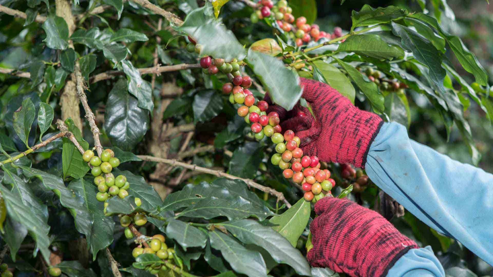

Key Chain Management: Expert Guide for Coffee Exporters
February 19, 2025 |
By Admin

Key Chain Management: Expert Guide for Coffee Exporters
Cold chain management is the cornerstone of maintaining tuna quality
from catch to consumer. This guide provides a comprehensive overview
of critical processes, technologies, and best practices essential
for preserving the integrity of tuna during international export.
- Initial temperature reduction: Below 4°C within 2 hours of catch
- Core temperature maintenance: -60°C to -50°C for frozen tuna
- Maximum allowable temperature fluctuation: ±1°C
- Initial temperature reduction: Below 4°C within 2 hours of catch
- Core temperature maintenance: -60°C to -50°C for frozen tuna
- Maximum allowable temperature fluctuation: ±1°C
- Initial temperature reduction: Below 4°C within 2 hours of catch
- Core temperature maintenance: -60°C to -50°C for frozen tuna
- Maximum allowable temperature fluctuation: ±1°C